Package index
Plot basics
Start a plot from a multilayer network, see what each component can be set to and what the plot sends to MiRA, open it in the browser, and save it to a file.
-
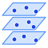
mira() - Start a plot: a multilayer network to draw in MiRA
-
mira_options() - What each component can be set to, for a network
-
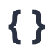
mira_spec() - What a plot sends to MiRA
-
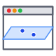
print(<mira_plot>) - Open a mira plot in the browser
-
mira_save() - Save a mira plot as an image file
Elements: nodes, links, layers
One component per element of the plot. color_by and size_by map an attribute of the data; color, size and shape set constants.
-
mira_node() - Nodes: color, size, shape and labels
-
mira_intralayer() - Intralayer links: color, weight filter and arrowheads
-
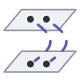
mira_interlayer() - Interlayer links: show, color, curvature and layer pairs
-
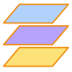
mira_layer() - Layers: color, names and arrangement
-
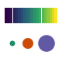
mira_scales - Scales: how data values become colors and sizes
-
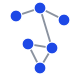
mira_layout() - Layout: where the nodes go
-
mira_camera() - Camera: rotate, tilt, zoom and pan the view
-
mira_legends() - Legends: which are open, and where
-
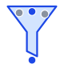
mira_filter() - Filter: draw only some nodes, links or layers
Views: MiRA’s modes
Open the plot in another view. A plot opens in one view; the other components still apply.
-
mira_mode - Views: open the plot in another of MiRA's views
-
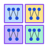
mira_mode_grid() - Grid: open the plot with the layers side by side
-
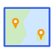
mira_mode_map() - Map: open the plot with the layers on a geographic map
-
mira_mode_layer() - Layer view: open the plot with one bubble per layer
-
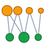
mira_mode_meta() - Meta-network: open the plot as the network aggregated over layers
-
mira_mode_dashboard() - Dashboard: open the plot as summary charts
-
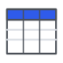
mira_mode_data() - Data: open the plot as the data tables
-
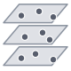
plot_mira()plot_multilayer() - Open a network in MiRA with MiRA's defaults
Feedback
Send feedback from R, with a GitHub account. On these pages: select text and click Feedback, click the speech bubble next to a heading, or use the Feedback button.
-
mira_feedback() - Send feedback on ggmira